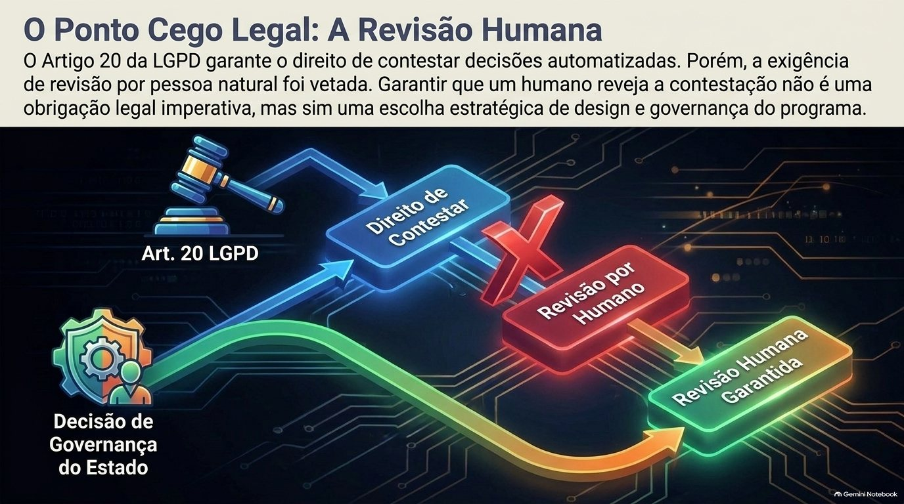
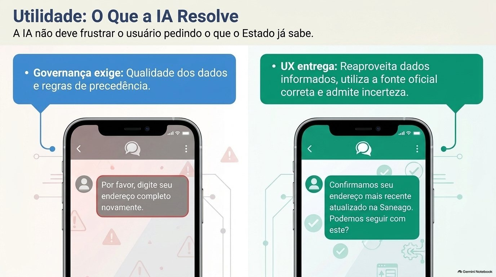
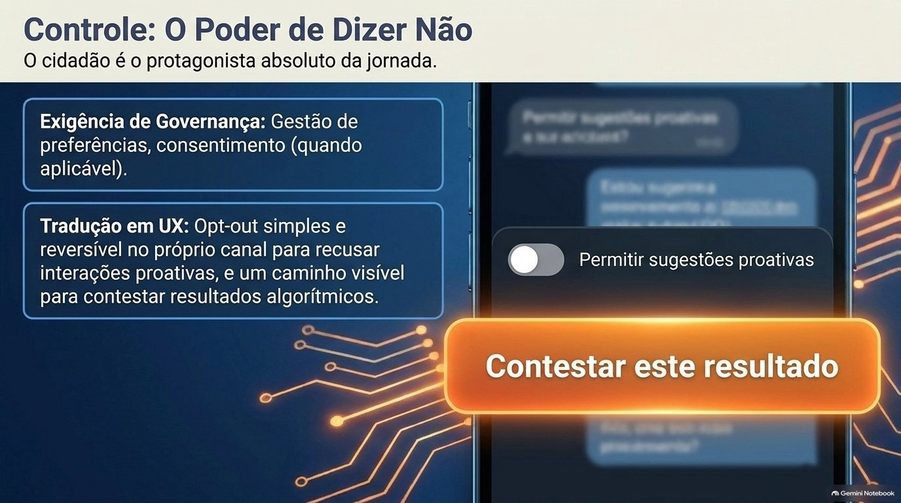
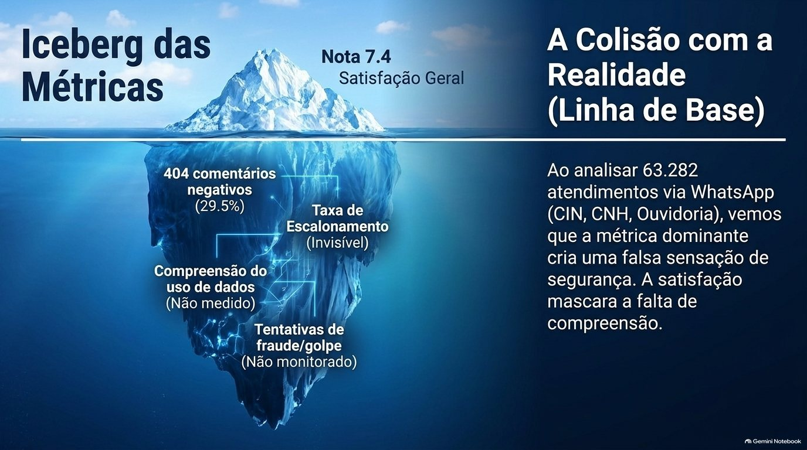
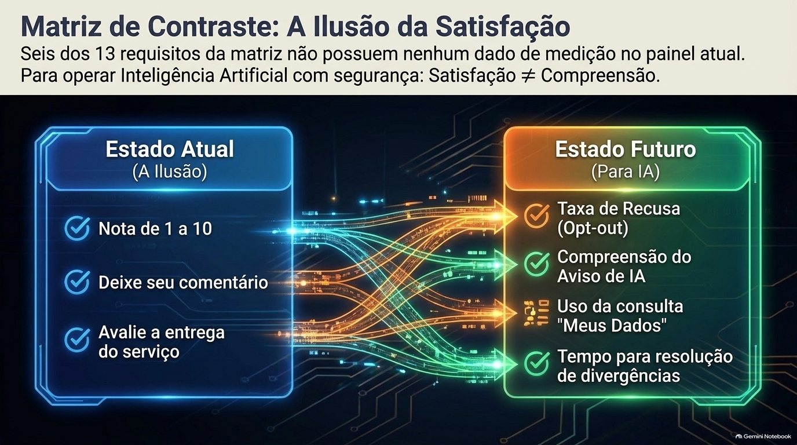

Do que trata o artigo
A inteligência artificial avança em serviços públicos digitais, mas interações tecnicamente corretas podem ser pouco compreensíveis ou contestáveis pelo cidadão. O artigo propõe uma matriz que relaciona categorias de controle de governança de IA a requisitos de experiência do usuário (UX) para transparência e contestabilidade.
Trata-se de um estudo de caso propositivo do Programa Goiás Cidadão, com análise documental, revisão de literatura e uma linha de base do painel de monitoramento dos serviços no WhatsApp (63.282 atendimentos e 2.549 avaliações, de 03/08 a 01/10/2026). A matriz reúne 13 requisitos em quatro dimensões: utilidade, transparência, confiança e controle. O monitoramento atual mede satisfação, mas não compreensão, escalonamento, recusa de usos proativos nem contestação, e seis das 13 linhas não têm dado correspondente.
Estudo propositivo: os serviços monitorados não são serviços com IA, a matriz ainda não foi validada com especialistas ou cidadãos, e o documento do programa citado como caso é interno e está em validação institucional. A análise é acadêmica e não representa posição oficial do Estado.
Pergunta e objetivo
Pergunta de pesquisa
Como traduzir os controles de governança de IA do Programa Goiás Cidadão em requisitos de UX que mantenham o cidadão informado, capaz de contestar resultados e no controle da interação?
Objetivo
Propor e aplicar uma matriz que relacione categorias gerais de controle de governança a requisitos de UX, com evidências e indicadores. Os controles de governança entram como insumo, e não como objeto de avaliação.
O paradoxo e o abismo
Uma interação tecnicamente correta nem sempre é compreensível ou contestável por quem a utiliza.
A inteligência artificial (IA) está cada vez mais presente em assistentes virtuais, buscas, recomendações e serviços automatizados, e o setor público a incorpora em áreas de aplicação diversas (Wirtz, Weyerer e Geyer, 2019). Uma interação tecnicamente correta, porém, nem sempre é compreensível, verificável ou contestável por quem a utiliza.
No serviço público, o risco é maior, pois o cidadão não escolhe outro prestador e erros podem afetar o acesso a benefícios, documentos e direitos. Estudos nacionais sobre chatbots governamentais registram, por exemplo, casos em que o atendimento não deixa claro que é automatizado (Batista, Monteiro e Salgado, 2022).
A literatura oferece diretrizes de UX para a interação humano-IA (Amershi et al., 2019), discussões sobre explicação e contestabilidade (Wachter, Mittelstadt e Floridi, 2017; Almada, 2019) e estruturas de governança de IA (NIST, 2023). Esses eixos costumam ser tratados em separado, e raramente no serviço público digital brasileiro.
Nas buscas realizadas para este estudo, não foi localizado trabalho que traduza controles de governança de IA em requisitos de interface e indicadores de avaliação. É essa lacuna que a matriz procura ocupar.
O caso: Programa Goiás Cidadão
Fundações de dados primeiro, proatividade e IA depois, com uma etapa formal de liberação.
Tabela 1 – Serviços monitorados no WhatsApp: atendimentos, avaliações e notas (03/08 a 01/10/2026)
| Serviço | Atendimentos | Avaliações | Nota do canal | Nota do serviço | Comentários negativos / válidos |
|---|---|---|---|---|---|
| Carteira de Identidade Nacional (CIN) | 47.192 | 1.878 | 7,19 | 7,13 | 344 de 1.002 (34%) |
| Renovação da CNH | 8.632 | 185 | 7,88 | 7,86 | 14 de 98 (14%) |
| Ouvidoria | 6.652 | 479 | 8,30 | 8,29 | 45 de 266 (17%) |
| Licenciamento ambiental | 806 | 7 | 6,57 | 6,57 | 1 de 2 |
| Total | 63.282 | 2.549 | ≈ 7,5 | ≈ 7,4 | 404 de 1.368 (29,5%) |
Fonte: elaboração própria, com base em dados do painel de monitoramento dos serviços no WhatsApp. Notas de 0 a 10; os valores totais de notas são médias ponderadas pelo número de avaliações.
O Programa Goiás Cidadão propõe evoluir o EXPRESSO, canal digital já consolidado com autenticação gov.br, para um modelo integrado e centrado na jornada do cidadão (Goiás, 2026). Organiza-se em duas camadas: uma fundação de dados, com interoperabilidade, identificação única e base única do cidadão, e uma camada de serviços e operação, com jornadas por momentos de vida, canal único, IA aplicada e gestão inteligente.
O horizonte é de 48 meses, em cinco níveis de maturidade. A regra de dependência estabelece que a proatividade e a IA vêm depois de dados governados e de supervisão humana, com uma etapa formal de liberação (gate, em inglês) que exige finalidade e base legal aprovadas, controles de acesso e auditoria, teste e supervisão.
O Canal Único integra o aplicativo e um número oficial de WhatsApp, sem eliminar o atendimento presencial, e prevê um Domicílio Digital do Cidadão como fonte oficial de comunicações.
Os serviços monitorados no período analisado foram a Carteira de Identidade Nacional (CIN), a renovação da Carteira Nacional de Habilitação (CNH), a Ouvidoria e a consulta ao licenciamento ambiental. Esses serviços são fluxos do WhatsApp e não foram identificados como serviços com IA, de modo que funcionam como linha de base do canal antes da IA.
O CIN concentrou cerca de 75% dos atendimentos (47.192 de 63.282) e teve as menores notas entre os serviços com amostra relevante (7,19 no canal e 7,13 no serviço), além da maior proporção de comentários negativos (34%). A Ouvidoria teve as maiores notas (8,30 e 8,29), e o licenciamento ambiental tem amostra pequena, com sete avaliações.
O que a literatura oferece
Diretrizes de UX, confiança, explicação, contestabilidade e o ponto cego da LGPD.

Amershi et al. (2019) propõem 18 diretrizes para a interação humano-IA, agrupadas conforme o momento de uso: início da interação, durante a interação, quando o sistema erra e ao longo do tempo. O People + AI Guidebook (Google, 2019) reúne padrões de projeto sobre calibração da confiança, exibição de incerteza, retorno do usuário e possibilidade de assumir o controle quando o sistema falha. Liao, Gruen e Miller (2020) propõem um banco de perguntas que os usuários fazem à IA, útil para derivar requisitos de explicação.
Lee e See (2004) tratam a confiança em automação como atitude que deve ser calibrada: o objetivo não é maximizá-la, e sim favorecer a dependência apropriada. Shneiderman (2020) propõe que a IA centrada no humano combine alto grau de automação com alto grau de controle humano, o que fundamenta requisitos como escalonamento para atendimento humano e correção pelo usuário.
Os princípios éticos de IA, por si sós, não indicam o que o usuário deve ver ou poder fazer. Jobin, Ienca e Vayena (2019) encontraram convergência em torno de transparência, justiça, não maleficência, responsabilidade e privacidade, com grande variação na interpretação e na implementação. O AI Risk Management Framework do NIST (2023) organiza a gestão de risco em quatro funções (Govern, Map, Measure e Manage).
Wachter, Mittelstadt e Floridi (2017) argumentam que o regulamento europeu não cria um direito geral à explicação de decisões automatizadas. Almada (2019) defende sistemas contestáveis desde a concepção, com previsão de intervenção humana, e Lyons, Velloso e Miller (2021) examinam como conceituar a contestabilidade. No Brasil, Macohin (2023) sustenta que a legislação de proteção de dados, isoladamente, não basta para assegurar transparência.
A Lei Geral de Proteção de Dados (LGPD) prevê, em seu art. 20, o direito de solicitar a revisão de decisões tomadas unicamente com base em tratamento automatizado de dados pessoais (Brasil, 2018). O dispositivo que exigia que a revisão fosse feita por pessoa natural foi vetado, e o veto foi mantido pelo Congresso em 2019.
A revisão humana, portanto, não decorre diretamente da lei e precisa ser definida por política de governança. O Projeto de Lei nº 2338/2023, sobre o uso da IA, foi aprovado pelo Senado e tramita na Câmara dos Deputados (Brasil, 2023).
Araújo et al. (2021) examinaram 25 portais web e 9 aplicativos móveis de governos estaduais e observaram inconsistência na ocorrência dos instrumentos de satisfação e falta de clareza sobre o que se pretendia avaliar. Pedrosa et al. (2026), com três grupos focais com 27 gestores federais de 12 instituições, identificaram baixa visibilidade da interface de avaliação, confusão entre avaliar a qualidade do serviço e o seu resultado e pouca participação do usuário.
Na acessibilidade, Barros et al. (2024) avaliaram o portal gov.br com ferramentas automatizadas e apontaram barreiras, e Nunes et al. (2025) analisaram os 80 serviços prioritários da Estratégia de Governo Digital e verificaram que os órgãos frequentemente terceirizam a responsabilidade pelos testes e que falta capacitação específica.
A matriz governança × UX
Treze requisitos em quatro dimensões: utilidade, transparência, confiança e controle.
- Governança de IARegras, responsabilidades, dados, riscos e supervisão
- Requisitos de UXUtilidade, transparência, confiança e controle
- Interface do serviço públicoAvisos, explicações, correção, recusa e contestação
- Avaliação da experiênciaCompreensão, resolução, acessibilidade e controle do cidadão
↺ Os resultados da avaliação realimentam os controles de governança


1. Resolutividade e continuidade. Controle de governança: resolutividade e continuidade de contexto entre canais (metas de serviço do programa). Requisito de UX: o assistente conclui a tarefa de ponta a ponta, reaproveita dados já informados e mantém o contexto ao mudar de aplicativo para WhatsApp ou atendimento presencial.
2. Qualidade dos dados antes da IA. Controle de governança: qualidade e governança dos dados antes da IA (regras de precedência e reconciliação). Requisito de UX: a resposta usa a fonte oficial correta e evita informar dado desatualizado ou divergente como se fosse certo. Quando houver dúvida, a interface admite a incerteza.
3. Aviso de IA. Controle de governança: etapa de liberação da IA, com finalidade, base legal e avaliação de privacidade aprovadas antes do uso. Requisito de UX: aviso em linguagem simples, no início e no ponto de uso, sobre para que serve a IA e quais dados ela consulta. O aviso não fica escondido em termos de uso.
4. Explicabilidade. Controle de governança: explicabilidade apropriada e controle de vieses como critério de liberação. Requisito de UX: o assistente se identifica como automatizado e declara capacidades e limites. Em elegibilidade proativa, explica por que a pessoa recebeu a mensagem e de que fonte veio o dado.
5. Rastreabilidade do dado. Controle de governança: rastreabilidade do dado, com origem, data, titularidade e linhagem. Requisito de UX: o cidadão consegue ver quais dados o Estado usou, de que origem e de que data, antes de confiar na resposta ou de contestá-la.
6. Canal oficial. Controle de governança: canal oficial de comunicação com o cidadão (Domicílio Digital). Requisito de UX: a interface distingue comunicação oficial de mensagem do assistente e ajuda o cidadão a reconhecer o canal autêntico, o que reduz o risco de golpes por WhatsApp.
7. Supervisão humana e escalonamento. Controle de governança: supervisão humana, escalonamento e plano de contingência. Requisito de UX: opção de falar com uma pessoa disponível em qualquer etapa, com transferência do contexto. A conversa não prende o cidadão em um ciclo de IA.
8. Tratamento de erros. Controle de governança: monitoramento, tratamento de erros e avaliação de resultados. Requisito de UX: mensagens de erro que dizem o que aconteceu e o que fazer em seguida. Sinalizar uma resposta incorreta exige poucos toques.
9. Minimização de dados e auditoria. Controle de governança: acesso por finalidade, minimização de dados e trilha de auditoria. Requisito de UX: o assistente pede somente os dados necessários à tarefa e informa o motivo. O cidadão pode consultar quem acessou seus dados e para quê.
10. Recusa de usos proativos. Controle de governança: recusa de usos proativos e gestão de preferências e consentimento. Requisito de UX: recusar ou desativar a proatividade é simples, reversível e feito no mesmo canal da mensagem. O consentimento, quando aplicável, é específico, e não um aceite genérico.
11. Correção e contestação. Controle de governança: correção e contestação pelo cidadão; LGPD, art. 20 (direito de pedir revisão de decisões automatizadas; a exigência de revisão por pessoa natural foi vetada). Requisito de UX: caminho visível para contestar um dado ou resultado, com protocolo, prazo, status e retorno por escrito no Domicílio Digital. A revisão por uma pessoa não é exigida pela LGPD e, por isso, deve ser definida pela governança do programa, com a recomendação de assegurá-la nas decisões de impacto relevante.
12. Reconciliação de divergências. Controle de governança: reconciliação manual de divergências de dados. Requisito de UX: o cidadão é informado de que há análise em andamento, do que falta e do prazo, em vez de receber um erro genérico ou um “tente mais tarde”.
13. Inclusão e acesso. Controle de governança: inclusão e acesso, com manutenção do atendimento presencial, acessibilidade e linguagem simples. Requisito de UX: a alternativa presencial ou assistida é explícita e não penaliza quem não usa IA. Os fluxos funcionam para pessoas com baixa literacia digital ou com deficiência.
A matriz foi construída em cinco passos: (1) extração dos controles de governança de IA do documento do programa; (2) agrupamento em categorias gerais, apoiado nos referenciais de governança; (3) associação de cada categoria a requisitos de UX derivados da literatura, nas quatro dimensões de análise; (4) definição de evidências e indicadores, distinguindo os que constam no programa dos que são propostos pelo estudo; e (5) confronto de cada linha com a linha de base do painel.
As quatro dimensões são uma operacionalização do estudo, e não categorias estabelecidas na literatura. Os controles de governança entram como insumo, e a adequação institucional da governança não é avaliada.
Linha de base e lacunas
O monitoramento atual mede satisfação, mas não compreensão, escalonamento, recusa ou contestação.


Sete das 13 linhas têm dado correspondente, e todos são medidas de satisfação ou menções em comentários. A disponibilidade do serviço foi indicada para melhorar em 455 das 2.549 avaliações (17,8%) e, no CIN, em 390 de 1.878 (20,8%); a entrega do serviço, em 362 (14,2%); a clareza das informações, em 165 (6,5%); e a segurança da informação, em 62 (2,4%).
Dos 1.368 comentários válidos, 404 (29,5%) foram classificados como negativos, e os termos “atendente” e “humano” aparecem em apenas cinco e três comentários, respectivamente.
Seis linhas, relativas a dados governados, aviso de IA, rastreabilidade do dado, recusa de usos proativos, contestação e reconciliação de divergências, não têm dado no painel. Isso indica que o monitoramento atual mede a satisfação com o canal e com o serviço, mas não a compreensão, o escalonamento, a recusa de usos proativos nem a contestação, que são justamente as dimensões que a matriz propõe medir.
Esses números devem ser lidos com cautela. Araújo et al. (2021) e Pedrosa et al. (2026) mostram que instrumentos de satisfação nem sempre deixam claro o que avaliam. No painel analisado, as notas do canal e do serviço são coletadas separadamente, o que dialoga com essa preocupação, mas a nota de satisfação não mede compreensão nem controle.
Além disso, os serviços monitorados são fluxos do WhatsApp e não foram identificados como serviços com IA. Os dados funcionam como linha de base do canal antes da IA, e não como avaliação de interações com IA.
Primeiro, o checklist de prontidão por serviço cobre acessibilidade, linguagem simples e escalonamento, mas não traz critérios específicos para interações com IA, como identificação do assistente, explicação de resultados ou fluxo de contestação. Segundo, a contestação aparece como entrega prevista, mas sem prazo, canal ou indicador definidos.
Terceiro, os indicadores de proatividade (aceite, recusa, reclamações e erros) medem o comportamento do cidadão, mas não se ele compreendeu por que recebeu a oferta. Quarto, falta distinguir o canal oficial de tentativas de fraude, o que importa em um canal como o WhatsApp.
Quinto, não há critério de UX na etapa de liberação da IA, que depende de base legal, dados e supervisão. Sexto, o programa precisa decidir em quais casos a contestação terá revisão humana, já que a lei não a exige. Essas lacunas são hipóteses derivadas da análise documental e dependem de verificação com as equipes responsáveis.
Recomendações
Seis medidas a partir da matriz e das lacunas.
(a) Incluir critérios de UX para IA no checklist de prontidão por serviço e na etapa de liberação da proatividade. (b) Definir a contestação com protocolo, prazo, retorno e regra de revisão humana. (c) Acrescentar ao monitoramento indicadores de compreensão do aviso de IA, de escalonamento, de recusa e de contestação, separados da satisfação com o resultado.
(d) Testar com usuários diversos, incluindo pessoas com baixa literacia digital e com deficiência, antes de cada onda de IA, em linha com as preocupações de acessibilidade apontadas por Barros et al. (2024) e Nunes et al. (2025). (e) Definir padrões para que o cidadão reconheça o canal oficial. (f) Validar a matriz em oficina com as equipes do Canal Único e da IA aplicada.
Método, limites e referências
Estudo de caso propositivo, com análise documental, revisão narrativa e dados agregados.
O estudo tem abordagem qualitativa e propositiva e adota o método de estudo de caso, tendo como caso o Programa Goiás Cidadão e, nele, o Canal Único (aplicativo e WhatsApp). Foram utilizadas três fontes: o documento de estruturação do programa, versão de outubro de 2026, documento interno em validação institucional; a literatura, reunida por revisão narrativa, com buscas em bases abertas, nos anais do IHC e do WCGE e em repositórios institucionais, sem pretensão de exaustividade; e a base agregada do painel de monitoramento dos serviços no WhatsApp, de 03/08 a 01/10/2026.
As avaliações trazem notas de 0 a 10 para o canal e para o serviço, critérios marcados como pontos a melhorar ou positivos e comentários cujo sentimento foi classificado pela equipe do painel, cujo método não está documentado na base. Os percentuais foram calculados sobre as 2.549 avaliações, e os comentários de testes foram excluídos, restando 1.368 comentários válidos.
O estudo é propositivo, os serviços monitorados não são serviços com IA, a base analisada vai até 01/10/2026 e a matriz não foi validada com especialistas ou cidadãos. Não há dados de uso real de IA nos serviços monitorados. A análise é acadêmica e não representa posição oficial do Estado.
Como trabalhos futuros, sugerem-se a validação da matriz em oficina e em testes com cidadãos, sua aplicação a um fluxo concreto de IA nas ondas seguintes, a comparação com outro caso de governo digital e a ampliação da linha de base com os dados posteriores a 01/10/2026.
ALMADA, Marco. Human intervention in automated decision-making: toward the construction of contestable systems. In: INTERNATIONAL CONFERENCE ON ARTIFICIAL INTELLIGENCE AND LAW, 17., 2019, Montreal. Proceedings [...]. New York: ACM, 2019. p. 2–11. DOI 10.1145/3322640.3326699.
AMERSHI, Saleema et al. Guidelines for human-AI interaction. In: CHI CONFERENCE ON HUMAN FACTORS IN COMPUTING SYSTEMS, 2019, Glasgow. Proceedings [...]. New York: ACM, 2019. DOI 10.1145/3290605.3300233.
ARAÚJO, Patrick de; PEREIRA, Rute; PEREIRA, Georgia; MONTEIRO, Ingrid; ROMERO, Davi. “Isto foi útil?” Análise de instrumentos de avaliação de satisfação em aplicações de serviços públicos. In: SIMPÓSIO BRASILEIRO SOBRE FATORES HUMANOS EM SISTEMAS COMPUTACIONAIS (IHC), 20., 2021, Online. Anais [...]. Porto Alegre: SBC, 2021.
BARROS, Ygor Santos; OUTÃO, Juliana Carvalho Silva do; SACRAMENTO, Carolina; FERREIRA, Simone Bacellar Leal; PIMENTEL, Mariano Gomes; SANTOS, Rodrigo Pereira dos. Avaliação de acessibilidade da plataforma Gov.br por ferramentas automatizadas. In: WORKSHOP DE COMPUTAÇÃO APLICADA EM GOVERNO ELETRÔNICO (WCGE), 12., 2024, [S. l.]. Anais [...]. Porto Alegre: SBC, 2024. p. 50–61. DOI 10.5753/wcge.2024.2282.
BATISTA, Gabriely Oliveira da Silva; MONTEIRO, Mateus de Souza; SALGADO, Luciana Cardoso de Castro. Investigando chatbots governamentais: um panorama sobre a usabilidade dentro e fora do Brasil. In: WORKSHOP DE COMPUTAÇÃO APLICADA EM GOVERNO ELETRÔNICO (WCGE), 10., 2022, Niterói. Anais [...]. Porto Alegre: SBC, 2022. p. 73–84. DOI 10.5753/wcge.2022.223318.
BRASIL. Decreto nº 12.198, de 24 de setembro de 2024. Institui a Estratégia Federal de Governo Digital para o período de 2024 a 2027 e a Infraestrutura Nacional de Dados. Brasília, DF: Presidência da República, 2024.
BRASIL. Lei nº 13.460, de 26 de junho de 2017. Dispõe sobre participação, proteção e defesa dos direitos do usuário dos serviços públicos da administração pública. Brasília, DF: Presidência da República, 2017.
BRASIL. Lei nº 13.709, de 14 de agosto de 2018. Lei Geral de Proteção de Dados Pessoais (LGPD). Brasília, DF: Presidência da República, 2018. Com as alterações da Lei nº 13.853, de 8 de julho de 2019.
BRASIL. Lei nº 14.129, de 29 de março de 2021. Dispõe sobre princípios, regras e instrumentos para o Governo Digital e para o aumento da eficiência pública. Brasília, DF: Presidência da República, 2021a.
BRASIL. Ministério da Ciência, Tecnologia e Inovações. Portaria MCTI nº 4.617, de 6 de abril de 2021. Institui a Estratégia Brasileira de Inteligência Artificial. Brasília, DF: MCTI, 2021b. Alterada pela Portaria MCTI nº 4.979, de 13 de julho de 2021.
BRASIL. Senado Federal. Projeto de Lei nº 2338, de 2023. Dispõe sobre o uso da Inteligência Artificial. Brasília, DF: Congresso Nacional, 2023. Disponível em: https://www.congressonacional.leg.br/web/atividade/materias/-/materia/157233. Acesso em: 16 nov. 2026.
CRISTÓVAM, José Sérgio da Silva; SAIKALI, Lucas Bossoni; SOUSA, Thanderson Pereira de. Governo digital na implementação de serviços públicos para a concretização de direitos sociais no Brasil. Sequência: Estudos Jurídicos e Políticos, Florianópolis, n. 84, p. 209–242, abr. 2020. DOI 10.5007/2177-7055.2020v43n84p209.
GOIÁS. Programa Goiás Cidadão: estruturação de projetos. Goiânia: [s. n.], 2026. Documento interno, em validação institucional.
GOOGLE. People + AI Guidebook. Mountain View: Google PAIR, [2019]. Disponível em: https://pair.withgoogle.com/guidebook/. Acesso em: 16 nov. 2026.
JOBIN, Anna; IENCA, Marcello; VAYENA, Effy. The global landscape of AI ethics guidelines. Nature Machine Intelligence, v. 1, n. 9, p. 389–399, 2019. DOI 10.1038/s42256-019-0088-2.
LEE, John D.; SEE, Katrina A. Trust in automation: designing for appropriate reliance. Human Factors, v. 46, n. 1, p. 50–80, 2004. DOI 10.1518/hfes.46.1.50_30392.
LIAO, Q. Vera; GRUEN, Daniel; MILLER, Sarah. Questioning the AI: informing design practices for explainable AI user experiences. In: CHI CONFERENCE ON HUMAN FACTORS IN COMPUTING SYSTEMS, 2020, Honolulu. Proceedings [...]. New York: ACM, 2020. p. 1–15. DOI 10.1145/3313831.3376590.
LYONS, Henrietta; VELLOSO, Eduardo; MILLER, Tim. Conceptualising contestability: perspectives on contesting algorithmic decisions. Proceedings of the ACM on Human-Computer Interaction, v. 5, n. CSCW1, art. 106, 2021. DOI 10.1145/3449180.
MACOHIN, Aline. Inteligência artificial na administração pública brasileira: uma abordagem transparente e explicável. Rio de Janeiro: Lumen Juris, 2023.
NATIONAL INSTITUTE OF STANDARDS AND TECHNOLOGY (Estados Unidos). Artificial Intelligence Risk Management Framework (AI RMF 1.0). Gaithersburg: NIST, 2023. (NIST AI 100-1). DOI 10.6028/NIST.AI.100-1.
NUNES, Erik Henrique da Costa; PACHECO, Sávio Teixeira; SOUZA, Moisés Cruz; MONTEIRO, Ingrid Teixeira. Diagnóstico da acessibilidade digital em serviços públicos prioritários usando a Lei de Acesso à Informação. In: SIMPÓSIO BRASILEIRO SOBRE FATORES HUMANOS EM SISTEMAS COMPUTACIONAIS (IHC), 24., 2025, [S. l.]. Anais [...]. Porto Alegre: SBC, 2025. p. 423–445. DOI 10.5753/ihc.2025.10754.
PEDROSA, Glauco Vitor; CANEDO, Edna Dias; SILVA, Wander C. M. Pereira da; FIGUEIREDO, Rejane M. da C. Evaluating digital public services in Brazil: insights from federal managers. Journal on Interactive Systems, Porto Alegre, v. 17, n. 1, p. 846–862, 2026. DOI 10.5753/jis.2026.6874.
SHNEIDERMAN, Ben. Human-centered artificial intelligence: reliable, safe & trustworthy. International Journal of Human–Computer Interaction, v. 36, n. 6, p. 495–504, 2020. DOI 10.1080/10447318.2020.1741118.
SILVA, Jhennifer Pereira; SANTOS, Lorena Caroline Fernandes. Percepções dos usuários sobre serviços de e-gov no Brasil: uma análise qualitativa. Revista do Serviço Público, Brasília, v. 76, n. 3, p. 417–439, 2025. DOI 10.21874/rsp.v76i3.11163.
WACHTER, Sandra; MITTELSTADT, Brent; FLORIDI, Luciano. Why a right to explanation of automated decision-making does not exist in the General Data Protection Regulation. International Data Privacy Law, v. 7, n. 2, p. 76–99, 2017. DOI 10.1093/idpl/ipx005.
WIRTZ, Bernd W.; WEYERER, Jan C.; GEYER, Carolin. Artificial intelligence and the public sector: applications and challenges. International Journal of Public Administration, v. 42, n. 7, p. 596–615, 2019. DOI 10.1080/01900692.2018.1498103.
A síntese
A resposta proposta é uma matriz de 13 linhas, em quatro dimensões, que relaciona categorias gerais de controle de governança a requisitos de interface, evidências e indicadores, confrontados com a linha de base do canal. A contribuição está em tornar operacional a relação entre governança e UX em um caso real de serviço público digital, e em mostrar que o monitoramento atual, centrado em satisfação, não mede compreensão, escalonamento, recusa de usos proativos nem contestação. A revisão humana de decisões automatizadas não é exigida pela LGPD e, por isso, depende de decisão de governança.
O objetivo final do governo digital não é exibir a IA, e sim tornar a burocracia invisível, com respeito, transparência e controle que o cidadão possa verificar.